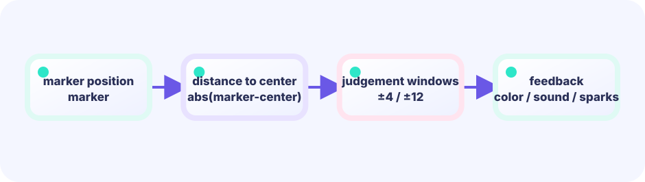

Update tick
Ebitengine calls Update at a configured, steady tick rate. Small additions connect into continuous movement.
marker += speed★☆☆☆☆ / PLAYABLE
Stop the bouncing marker inside the center band. Play first; afterward, find the two ideas underneath: “move a little at a time” and switch between moving and stopped.
Only Update changes the marker's position, speed, and state. Draw only projects the values it receives; it never mutates position or score. Different Draw frequencies therefore do not change how the same input advances the rules.
PLAYABLE / WEBASSEMBLY
Use space, click, or tap. Closer to the center means a higher score.
FIRST-TIME READER
Find where this one line is used, then follow how its value changes on screen. This is the shared game-state boundary: add rules in Update, then choose an independent presentation in Draw. The numbered steps below add one system at a time.
ONE RULE TO TRACE
Match the explanation to this line, then test the change in the game.
phase := frame % 120Update ticks and state
Update advances state in small, configured ticks. A state machine keeps a label such as moving, stopped, or result. Alternating the starting side prevents a memorized timing trick, and Draw frequency does not change this rule.
round % 2

DEEP DIVE / TIME & STATE
Each Update calculates position = position + speed. Flip the sign of speed at the edges and it travels back and forth. Stopping means switching into a “do not move” state; Draw presents that current position.
Ebitengine calls Update at a configured, steady tick rate. Small additions connect into continuous movement.
marker += speedAt the left or right edge, set speed = -speed. Same speed, opposite direction.
speed = -speedMoving or stopped. While stopped, skip movement and score from the distance to the center.
stopped boolTRY IT / 1 UPDATE AT A TIME
“One Update” moves the marker. It flips at the edges. “Stop” scores from the distance to the center.
In the real game, Update advances automatically at its configured tick rate. This lab is slow motion so you can see the rule.
TRY IT · GO
x += speed; if x > max || x < min { speed = -speed } if justPressed { stopped = true } if abs(x-center) < zone { score++ }
—
THE TWO-MODE RULE
moving: marker += speedstoppeddistance = |marker - center|The same button means different things in different states: stop while moving, start the next round while stopped. The game remembers its current scene and switches behavior. Programmers call this a state machine.
Trace just three steps: 1. read whether the button was pressed; 2. check stopped to see whether the game is moving or showing a result; 3. stop a moving marker, or begin the next round from a result.
% means the remainder of division. round % 2 is 1 for odd rounds and 0 for even rounds. The game uses that result to alternate between starting at the left edge and the right edge, so a player cannot win by memorizing one identical timing.
math.Abs turns a signed gap into "how far from center," regardless of which side you're on.
The speed formula 3.2 + float64(g.round)*0.18 converts the whole-number round into a decimal with float64(...). Think of whole numbers (like counting items) and decimals (like a distance that can be "half a step") as two different kinds of boxes. Go will not mix them directly in one calculation, so float64(...) moves the whole number into the decimal-shaped box first.
IN THE REAL GAME
After reading input, ask “are we stopped?” Only move while active, and flip direction at the edges.
func (g *game) Update() error {
if pressed() {
if g.stopped {
g.stopped = false // next round
} else {
g.stopped = true
g.score += scoreFor(g.markerX)
}
}
if g.stopped {
return nil
}
g.markerX += g.speed
if g.markerX < 45 || g.markerX > width-45 {
g.speed = -g.speed
}
return nil
}TODAY — look here first
The code below is the entire game (drawn with simple shapes). Copy it to your editor — but first follow the three “look here first” points above.
Note: inline comments in this full listing are in Japanese for young learners. The English teaching snippets above are your guide.
package main
import (
"fmt"
"image/color"
"math"
"github.com/kumagi/EbiShowcase/internal/lessonlogic"
"github.com/hajimehoshi/ebiten/v2"
"github.com/hajimehoshi/ebiten/v2/ebitenutil"
"github.com/hajimehoshi/ebiten/v2/inpututil"
"github.com/hajimehoshi/ebiten/v2/vector"
)
const (
screenWidth = 480
screenHeight = 720
centerX = screenWidth / 2
barLeft = 45
barRight = screenWidth - 45
)
type game struct {
markerX float64 // 動く線の位置
speed float64 // 1 tickで動く量（マイナスなら左へ）
score int
round int
stopped bool // 止めた直後か
}
// スペース・クリック・タッチのどれかが「いま押された」か
func justPressed() bool {
if inpututil.IsKeyJustPressed(ebiten.KeySpace) {
return true
}
if inpututil.IsMouseButtonJustPressed(ebiten.MouseButtonLeft) {
return true
}
if len(inpututil.AppendJustPressedTouchIDs(nil)) > 0 {
return true
}
return false
}
// 中心からの距離で得点を決める
func pointsForDistance(distance float64) (points int, label string) {
return lessonlogic.TimingScore(distance)
}
// --- ここから Update ---
func (g *game) Update() error {
if justPressed() {
if g.stopped {
// 次のラウンドを始める
g.stopped = false
g.round++
g.speed = 3.2 + float64(g.round)*0.18
// 奇数ラウンドは左向きからスタート
if g.round%2 == 1 {
g.speed = -g.speed
}
} else {
// 動いている線を止めて採点する
g.stopped = true
distance := math.Abs(g.markerX - centerX)
points, _ := pointsForDistance(distance)
g.score += points
}
}
if g.stopped {
return nil
}
// 線を動かす
g.markerX, g.speed = lessonlogic.BouncedPosition(g.markerX, g.speed, barLeft, barRight)
return nil
}
// --- ここから Draw ---
func (g *game) Draw(screen *ebiten.Image) {
screen.Fill(color.RGBA{7, 20, 38, 255})
// メーターの帯（外側 → 内側ほど高得点）
vector.DrawFilledRect(screen, 35, 310, screenWidth-70, 80, color.RGBA{16, 44, 69, 255}, false)
vector.DrawFilledRect(screen, centerX-55, 310, 110, 80, color.RGBA{255, 105, 79, 255}, false)
vector.DrawFilledRect(screen, centerX-28, 310, 56, 80, color.RGBA{255, 205, 69, 255}, false)
vector.DrawFilledRect(screen, centerX-8, 310, 16, 80, color.RGBA{45, 226, 194, 255}, false)
// 動く白い線
vector.DrawFilledRect(screen, float32(g.markerX-4), 285, 8, 130, color.White, false)
ebitenutil.DebugPrintAt(screen, fmt.Sprintf("SCORE %04d ROUND %02d", g.score, g.round+1), 145, 35)
if g.stopped {
distance := math.Abs(g.markerX - centerX)
_, label := pointsForDistance(distance)
ebitenutil.DebugPrintAt(screen, label+"\n\nTAP FOR NEXT ROUND", 165, 470)
} else {
ebitenutil.DebugPrintAt(screen, "TAP / SPACE TO STOP", 165, 470)
}
}
func (g *game) Layout(_, _ int) (int, int) {
return screenWidth, screenHeight
}
func main() {
ebiten.SetWindowSize(screenWidth, screenHeight)
ebiten.SetWindowTitle("Stop the Meter — Ebitengine")
g := &game{markerX: barLeft, speed: 3.2}
if err := ebiten.RunGame(g); err != nil {
panic(err)
}
}
BUILD IT LINE BY LINE / UPDATE WORKSHOP
Each press alternates between stop and restart. A bool, modulo, and an early return turn that into a state machine that reads like instructions.
Some braces intentionally stay open between pieces, so intermediate code may not compile yet. Each card explains what to paste, why it belongs here, and which Go feature helps. The snippets are extracted from the running game; after the final paste, Update exactly matches the real one.
justPressed avoids counting a held button every tick. stopped chooses either next-round setup or scoring; else guarantees both cannot happen together.
func (g *game) Update() error {
if justPressed() {
if g.stopped {
// 次のラウンドを始める
g.stopped = false
g.round++
g.speed = 3.2 + float64(g.round)*0.18
// 奇数ラウンドは左向きからスタート
if g.round%2 == 1 {
g.speed = -g.speed
}
} else {
// 動いている線を止めて採点する
g.stopped = true
distance := math.Abs(g.markerX - centerX)
points, _ := pointsForDistance(distance)
g.score += points
}
}The early return keeps the movement equation unreachable after scoring. Draw may present the same marker many times; Update owns the fact that it is stopped.
if g.stopped {
return nil
}A pure helper returns both the next position and speed. Crossing an edge changes the speed sign. nil ends the tick normally.
// 線を動かす
g.markerX, g.speed = lessonlogic.BouncedPosition(g.markerX, g.speed, barLeft, barRight)
return nil
}Update owns only input and advancing game state. Replace Draw with another presentation and the controls, timing, collisions, and outcomes assembled here remain unchanged.
WITHOUT STATE
If every press does the same work, you cannot separate “stop” from “resume.”
WITH STATE
One stopped flag can change both input meaning and whether movement runs.
YOUR FIRST RULE
In games/core/timing-meter/main.go, add perfectStreak int to game. Immediately after points, _ := pointsForDistance(distance) in Update, increase the streak when points == 100; on two in a row add g.score += 50. Reset the streak otherwise. Draw only displays it. Verify with go test ./... and a local run.
FEEDBACK